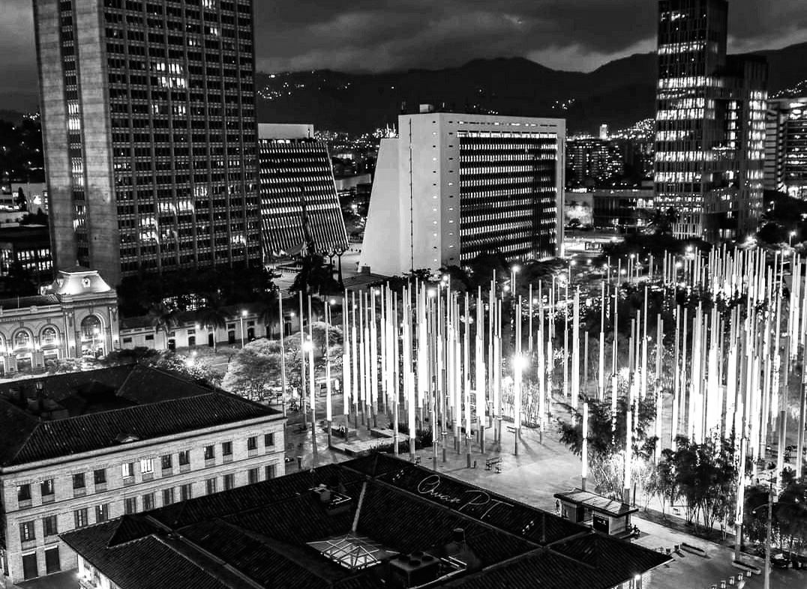
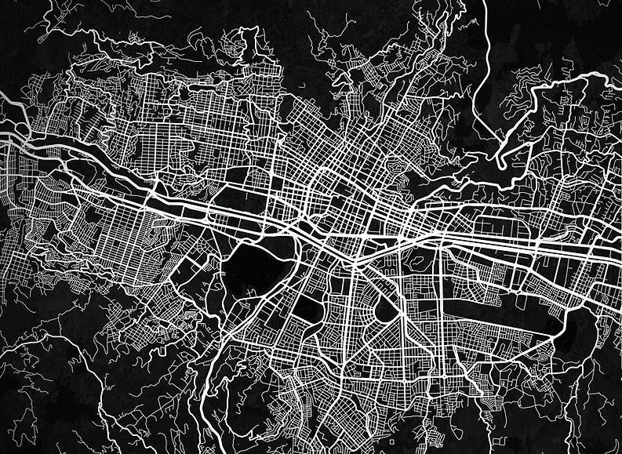

Ser de barrio en Medellín no es solo decir "soy del 8", "vengo del Popular", "me crié en la 13". Es mucho más que una dirección. Es una forma de pararse en la vida. De mirar de frente. De hablar con sabor. De cargar historia en los hombros y orgullo en el pecho.
Es saber que la cuadra es tu mundo. Que la tienda de la esquina es tu punto de encuentro. Que el parque es tu sala de juntas. Que el mural que está en la pared no es decoración: es memoria. Es resistencia. Es grito.
Ser de barrio es crecer entre combos de cultura, entre parches que hacen música, que pintan, que bailan, que sueñan. Es ver cómo los pelados convierten una patineta en libertad. Cómo las parceras hacen de la moda una forma de decir "aquí estoy, y soy poderosa". Cómo las mamás levantan hogares con creatividad, con arepas, con amor.

También es cargar con el peso del estigma. Que te miren raro cuando decís de dónde sos. Que te pregunten si es peligroso, si hay balaceras, si es "zona caliente". Pero vos sabés que el barrio es mucho más que eso. Que hay talento, arte, emprendimiento. Que hay vida. Que hay futuro.
Ser de barrio es vestir con lo que hay, pero hacerlo con estilo. Con flow. Con identidad. Es ponerse una gorra como quien se pone una bandera. Es llevar cadenas que no son de oro, pero sí de historia. Es usar tenis rotos con dignidad.
Es saber que el barrio te enseña cosas que no están en ningún libro. Te enseña a sobrevivir. A compartir. A crear. A resistir.
Y si vos sos de barrio, sabés que eso no se compra. No se finge. No se disfraza. Se vive. Se defiende. Se celebra.
